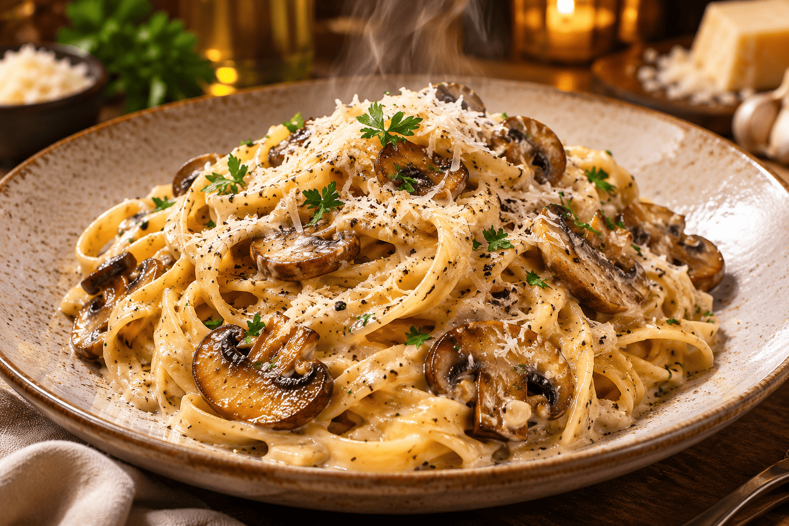

Técnica destacada
Cómo conseguir un buen sellado en una sartén sin cocer la carne al vapor.
Aprender técnica
- Seca la carne con papel absorbente para eliminar la humedad superficial.
- Precalienta la sartén a fuego medio-alto y añade el aceite sin dejarlo humear intensamente.
- Coloca la carne dejando espacio entre los cortes para que no se acumule vapor.
- Deja que se forme la costra antes de moverla; el tiempo depende del grosor y del corte.
- Voltea con pinzas y sella el otro lado.
- Si quieres, añade mantequilla, ajo y romero; controla la temperatura interna con un termómetro.
- Deja reposar la carne unos minutos antes de cortarla.
Sellar no retiene los jugos: el dorado desarrolla sabor y textura. Para seguridad alimentaria, respeta las temperaturas internas recomendadas para cada preparación.